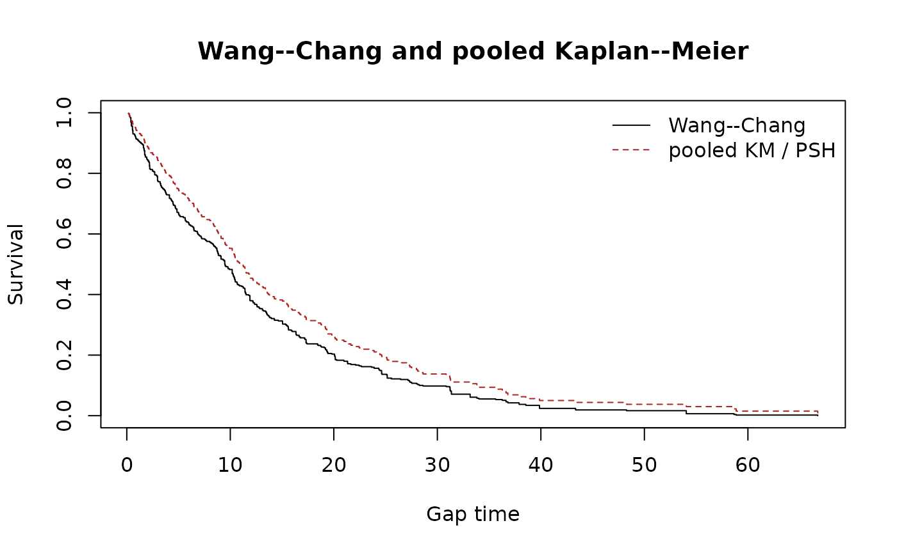

Wang--Chang reference implementation check
Source:vignettes/wang-chang-reference-check.Rmd
wang-chang-reference-check.RmdPurpose
This check compares wc_surv() with the Wang–Chang
estimators exposed by survrec::wc.fit() and
newTestSurvRec::WC.fit() on exactly the same simulated
recurrent gap-time records. It is a numerical regression check of the
estimator, not a comparison of the packages’ recurrent rank tests.
Estimands and simulated curves
For subject , let if the subject has no completed event and otherwise let be its number of completed gaps. Wang–Chang uses
with . In contrast, standard pooled Kaplan–Meier gives every gap record unit weight: and . The latter is numerically the PSH curve in this long gap-time representation, but has a renewal/IID interpretation rather than Wang–Chang’s marginal interpretation.
set.seed(20260918)
n_event <- sample(1:5, 100, replace = TRUE)
simulated_gaps <- do.call(rbind, lapply(seq_along(n_event), function(i) {
k <- n_event[i]
data.frame(id = i, episode = seq_len(k + 1L),
gap = stats::rexp(k + 1L, rate = 1 / 12), status = c(rep(1L, k), 0L))
}))
wc <- wc_surv(simulated_gaps, episode = "episode")
km <- psh_surv(simulated_gaps, episode = "episode")
grid <- sort(unique(c(wc$time, km$time)))
step_value <- function(fit, time) vapply(time, function(t) {
ii <- which(fit$time <= t)
if (length(ii)) fit$surv[max(ii)] else 1
}, numeric(1))
wc_at_grid <- step_value(wc, grid)
km_at_grid <- step_value(km, grid)
plot(grid, wc_at_grid, type = "s", ylim = c(0, 1), xlab = "Gap time",
ylab = "Survival", main = "Wang--Chang and pooled Kaplan--Meier")
lines(grid, km_at_grid, type = "s", col = "firebrick", lty = 2)
legend("topright", c("Wang--Chang", "pooled KM / PSH"),
col = c("black", "firebrick"), lty = c(1, 2), bty = "n")
plot(grid, wc_at_grid - km_at_grid, type = "s", xlab = "Gap time",
ylab = expression(hat(S)[WC] - hat(S)[KM]),
main = "Difference: Wang--Chang minus pooled KM")
abline(h = 0, lty = 2, col = "grey40")The reference packages are deliberately not dependencies of
recurSurvTests. Install them and run the chunk below
interactively when updating either the estimator or its data
conversion.
library(recurSurvTests)
stopifnot(
requireNamespace("survrec", quietly = TRUE),
requireNamespace("newTestSurvRec", quietly = TRUE)
)
simulate_gaps <- function(seed, n, event_range, rate) {
set.seed(seed)
n_event <- sample(event_range, n, replace = TRUE)
do.call(rbind, lapply(seq_len(n), function(i) {
k <- n_event[i]
data.frame(
id = i,
episode = seq_len(k + 1L),
gap = stats::rexp(k + 1L, rate = rate),
status = c(rep(1L, k), 0L)
)
}))
}
compare_wc <- function(dat) {
ours <- wc_surv(dat, episode = "episode")
survrec_fit <- survrec::wc.fit(
survrec::Survr(dat$id, dat$gap, dat$status)
)
new_test_fit <- newTestSurvRec::WC.fit(
as.matrix(dat[, c("id", "gap", "status")])
)
stopifnot(identical(ours$time, survrec_fit$time))
data.frame(
n_event_times = nrow(ours),
max_abs_wc_surv_vs_survrec = max(abs(ours$surv - survrec_fit$survfunc)),
max_abs_wc_surv_vs_newTestSurvRec = max(abs(ours$surv - new_test_fit$survfunc))
)
}
scenario_1 <- simulate_gaps(20260918, n = 100, event_range = 1:5, rate = 1 / 12)
scenario_2 <- simulate_gaps(20260919, n = 80, event_range = 0:6, rate = 1 / 9)
rbind(
cbind(scenario = "1--5 completed events/person", compare_wc(scenario_1)),
cbind(scenario = "0--6 completed events/person", compare_wc(scenario_2))
)Recorded result
Using survrec 1.2.5 and newTestSurvRec
1.0.2, the comparison gave:
| Scenario |
wc_surv() vs survrec
|
wc_surv() vs
newTestSurvRec
|
|---|---|---|
| 100 subjects, 1–5 completed events/person | 1.05e-15 | 3.33e-9 |
| 80 subjects, 0–6 completed events/person | 5.55e-17 | 5.00e-9 |
The survrec agreement is at floating-point precision.
newTestSurvRec rounds its returned survival curve to eight
decimal places, which explains its small residual difference. The second
scenario includes subjects with no completed event, confirming the
convention under which their terminal censored gap contributes to the
weighted risk set.
References
Wang MC, Chang SH (1999). Nonparametric estimation of a recurrent survival function. Journal of the American Statistical Association, 94, 146–153.
Pena EA, Strawderman RL, Hollander M (2001). Nonparametric estimation with recurrent event data. Journal of the American Statistical Association, 96, 1299–1315. doi:10.1198/016214501753381887.